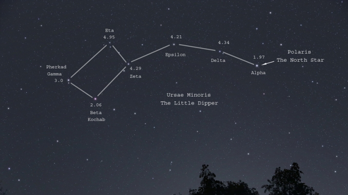

Ursa Minor Constellation
Ursa Minor constellation lies in the northern sky. The constellation’s name means “the smaller bear,” or “the lesser bear,” in Latin. The Great Bear constellation is represented by its larger neighbor Ursa Major. Ursa Minor was first catalogued by the Greek astronomer Ptolemy in the 2nd century. It is easy to recognize because it contains the famous Little Dipper asterism. Ursa Minor is also notable for marking the location of the north celestial pole, as it is home to Polaris, the North Star, which is located at the end of the dipper’s handle. The constellation is believed to have been created by Thales of Miletus, a philosopher and astronomer who lived between 625 and 545 BC and was known as one of the Seven Sages of Greece (early 6th century philosophers known for their wisdom). It is also possible that Thales merely introduced the constellation to the Greeks. He was believed to be descended from a Phoenician family, and Phoenicians frequently used Ursa Minor in navigation because, lying so close to the North Pole, the constellation was an excellent guide to true north. The Greeks sometimes called the constellation the Phoenician. Before it became known as the Little Bear (Μικρὰ Ἄρκτος), Ursa Minor was known as Dog’s Tail, or Cynosura (originally Κυνόσουρα in Greek).

MYTHOLOGY
Ursa Minor is usually associated with two different myths. In one, the constellation represents Ida, the nymph who took care of Zeus on the island of Crete when he was small, along with Adrasteia, the nymph represented by the larger constellation Ursa Major. Zeus’ mother Rhea hid Zeus on the island when he was very young to protect him from his father Cronus. Cronus, fearful of an old prophecy that said that one of his children would overthrow him, swallowed five of his children after they were born. When Zeus was born, Rhea tricked Cronus into swallowing a stone instead, and Zeus eventually fulfilled the prophecy. He freed his brothers Poseidon and Hades and sisters Hera, Hestia and Demeter, and became the supreme god of the Olympians. In a different myth, the constellation represents Arcas, son of Zeus and the nymph Callisto. Callisto had sworn a vow of chastity to Artemis, but was later unable to resist Zeus’ advances and the two had a child, Arcas. When Zeus’ wife Hera found out about the betrayal and the child, she turned the nymph into a bear. Callisto spent the next 15 years wandering in the woods and avoiding hunters.
One day, she came face to face with her son. Scared, Arcas drew a spear, ready to kill the bear. Luckily, Zeus saw the scene and intervened before it was too late. He sent a whirlwind that scooped the mother and son up to the heavens, where Callisto became Ursa Major and Arcas, Ursa Minor. Arcas, however, is more frequently associated with the constellation Boötes, the herdsman. In a slightly different version of the myth, it is the goddess Artemis who turns Callisto into a bear for breaking her chastity vow. In an older myth, the seven stars that form the Little Dipper were said to represent the Hesperides, seven daughters of Atlas, who tended to Hera’s orchard (Garden of the Hesperides) where a tree of golden, immortality-giving apples grew.